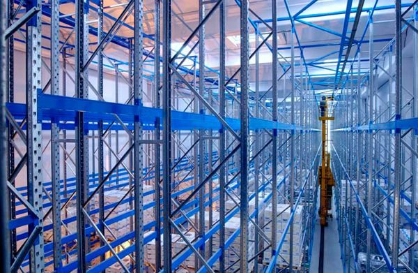
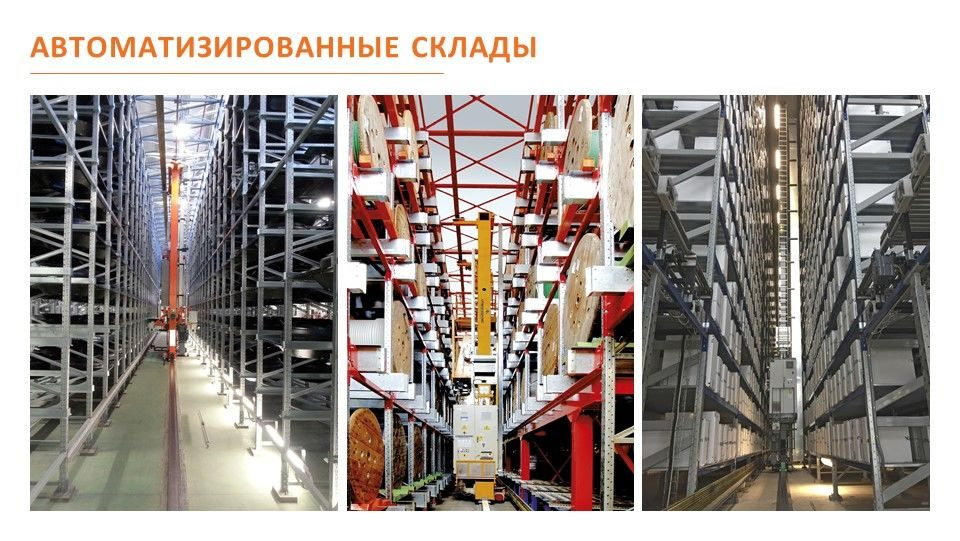
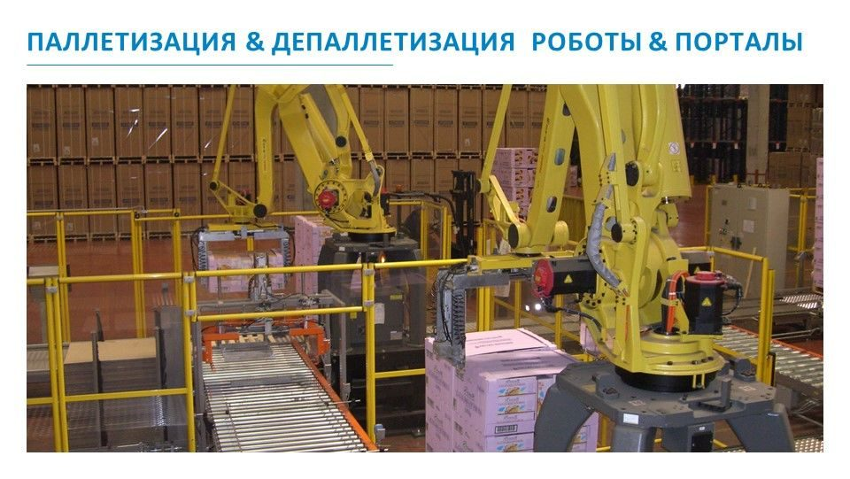
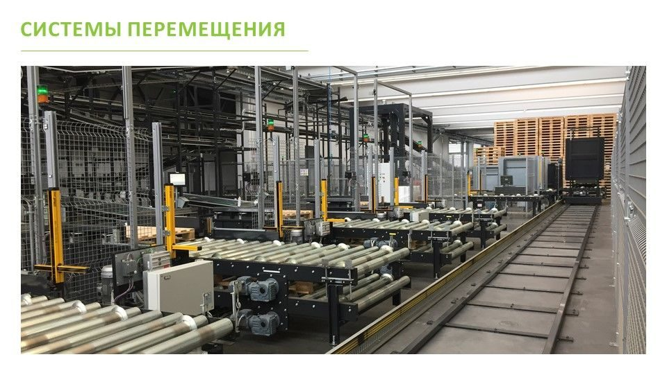
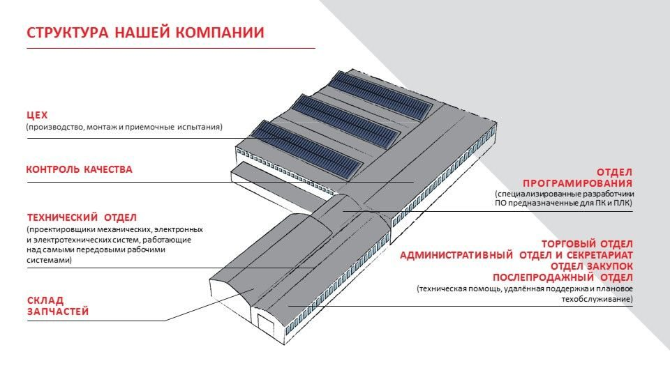
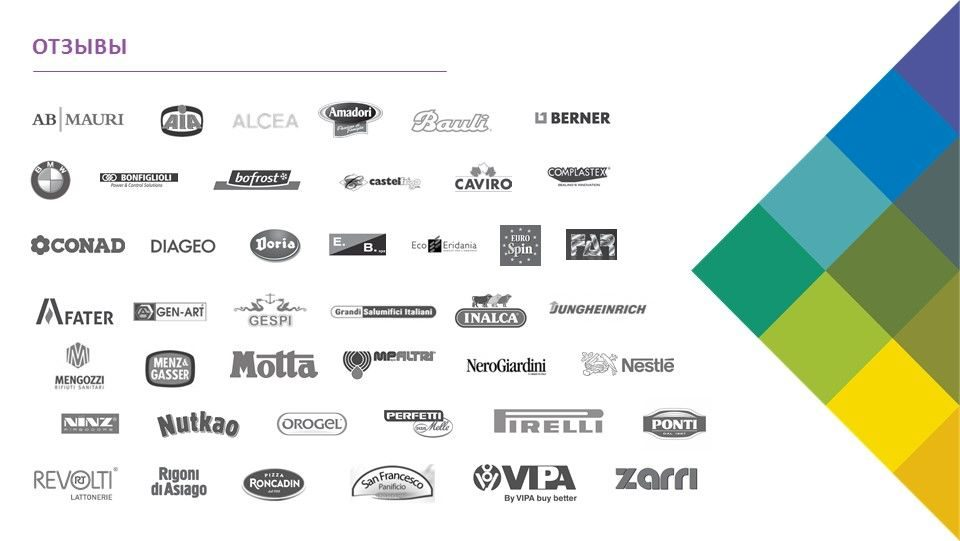

Автоматизированные склады UTECO CONTEC
Хранение, перемещение, паллетизация и программное управление потоками продукции.

Оборудование раздела

UTECO CONTEC
Краны-штабелёры и мини-загрузчики

UTECO CONTEC
Паллетизация и депаллетизация

UTECO CONTEC
Системы перемещения

UTECO CONTEC
Программное обеспечение
Системы UTECO CONTEC
С 1968 года UTECO CONTEC разрабатывает автоматизированные промышленные системы. Склад, перемещение продукции и управление производственными потоками объединяются в единый проект.
Фотографии и схемы

